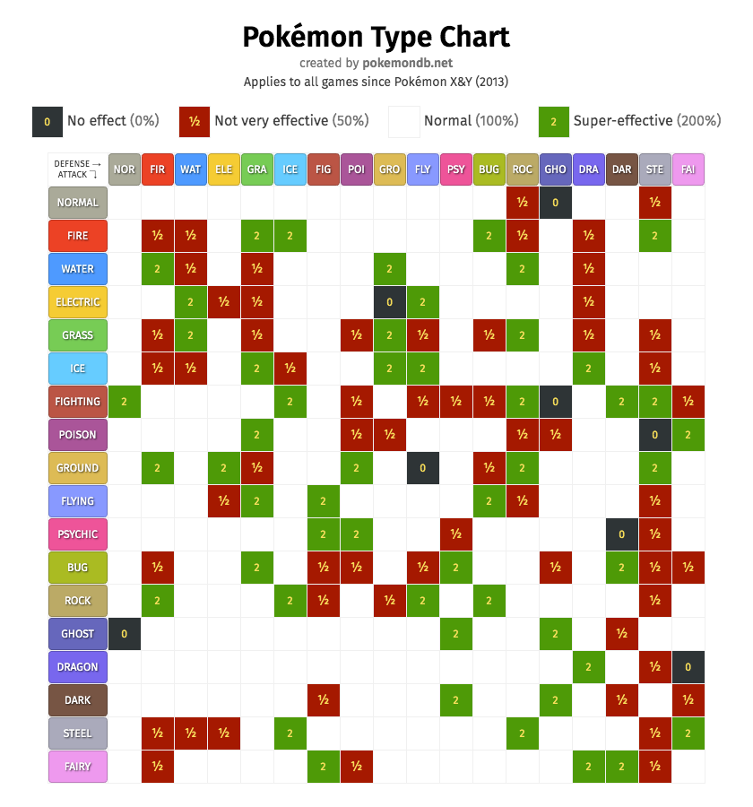
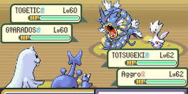

For those unfamiliar, Pokemon is a video game where players (henceforth trainers) encounter and capture Pokemon in the wild. These Pokemon can then be used in Pokemon battling, which is the core gameplay mechanic of the games that keeps so many trainers returning, year after year. There are two battling formats, single and double battles. Each trainer can have a total of six unique Pokemon at a time, with duplicates typically banned. In single battles, two trainers compete against each other with one Pokemon at a time. In double battles, trainers battle with two Pokemon at a time. Before diving into the battles, it is important to lay out what characterizes a Pokemon.
To date, there are 1025 unique Pokemon. Each Pokemon has various features that make it unique. First and foremost, each Pokemon has a unique visual design. Second, they have a "level", which is in the range [1, 100]. By battling and defeating opponents, Pokemon gain experience points. Once a Pokemon gains enough experience points, they "level-up" to the next level. Some Pokemon can "evolve', a process by which leveling up changes its visual design. Not only does evolution change the visual design, but it can also change a Pokemon's stat distribution -- but what is a stat distribution?
In Pokemon games, there are six "base stats" that every Pokemon has: Health Points (HP), Attack, Defense, Special Attack, Special Defense, and Speed. While visual designs indicate to the player what Pokemon they are using or are up against, it is ultimately the base stats that characterize a Pokemon. HP determines how much health a Pokemon has, Attack determines how strong their physical attacking moves are, defense determines how well they can receive a physical attack, and Special Attack and Special Defense are similarly defined. The speed stat is arguably the most important, as it determines the order that Pokemon attack. Each of these stats are defined on the set of natural numbers. On top of each Pokemon's base stats, there are additional modifiers that affect a Pokemon's effectiveness called Individual Values (IVs) and Effort Values (EVs). Each Pokemon has one IV for each stat. IVs are defined on the set of integers from [0, 31]. IVs are randomly selected for each base stat when a Pokemon is generated, and modify the base stats increasingly as the IV increases. IVs are fixed, and cannot be altered by trainer. EVs, on the other hand, are earned from battling Pokemon. Every defeated Pokemon gives the victor a deterministic number of EVs that are based on the defeated Pokemon's species. EVs also increase the associated stat at certain thresholds. A Pokemon may have up to 252 EVs per stat, with a maximum of 512 EVs across all six stats. The final piece of the stat puzzle is that of natures. There are 25 possible natures a Pokemon may have, also determined at the point of generation. In short, a nature increases a certain stat (excluding HP) by 10%, and decreases another by 10%. It is possible to have neutral natures, wherein no multipliers are applied to any stat.
A turn in Pokemon is played simultaneously, wherein each Pokemon on the field selects an action. There are two actions a Pokemon can take each turn -- they can use an attack or they can switch off of the field for a teammate. Trainers must select four moves for each of their Pokemon to have access to in battle. These moves are selected from a broader "move pool" that is pre-determined by the game designers. Each move has two base characteristics that define it -- accuracy and base power. Accuracy defines the likelihood a move lands on it's opponent, and base power is an input into the damage function. Further, there are two classes of attacks a Pokemon can use -- damaging and non-damaging moves. Non-damaging moves apply status effects, stat changes, or other effects to their targer. Damaging moves reduce their target's HP, and some damaging moves have secondary effects similar to that of non-damaging moves. Moves have one other feature not yet introduced called types.
Types are another characteristic that define both Pokemon and their moves. There are 18** unique types in Pokemon, and each Pokemon can have a total of two types. This means there are a total of 171 possible type combinations (inclusive of single-type Pokemon). As hinted at, types are also applied to moves. Pokemon are not restricted to learning only moves that match their type, these moves are incentivized. When a Pokemon uses a damaging move that matches their type, a Same-Type Attack Boost (STAB) is applied to that move. This modifier takes the base power of a move and applies a scalar of 1.5. So, if a fire-type Pokemon uses a fire-type move with a base power of 80, the move's basepower transforms to 120. Another feature of moves are their Power Points (PP), which define how many times a move may be used in battle.
Types are important because they determine offensive and defensive matchups, primarily through modifiers similar to that of STAB. An item that every Pokemon player must learn is what is known as the type chart. The type chart below details the interactions between each of the types.
For example, a fire-type move does reduced damage to water-type Pokemon by a multiplier of 0.5. A fire-type move does increased damage to grass-type Pokemon by a mutlipler of 2. There is an additional one-in-sixteen possibility that a damaging move deals increased damage by a factor of 1.5, which is known as a critical hit. Critical hits ignore all defensive modifiers of the opponent, and ignore any offensive stat decreases of the attacker.
As mentioned above, non-damaging moves apply various effects to their target. These effects can be things like decreasing their opponents speed, defense, special defense, attack, or special attack by stages. Some moves can be used to increase (or boost) the stats of a teammate or itself. Each stat can be increased or decreased from its base level six times. Other non-damaging moves can apply status to their target. Status effects are modifiers that alter how that Pokemon works. There are five status in Pokemon, namely Sleep, Freeze, Confusion, Paralysis, and Burn. Sleep and Freeze function similarly, where they skip the afflicted Pokemon's turns for a random number of turns. Confusion and Paralysis function simialry, where there is a one-in-three chance for each Pokemon to fail to move that turn. In Confusion's case, if a Pokemon fails to move due to Confusion, it also damages itself in the process. For paralysis, no damage is inflicted if the Pokemon fails to move, but it's speed stat is cut in half unless it the status is removed. If a Pokemon is burned, it's physical attacking stat is cut in half (and does not have this stat drop ignored by a critical hit, but critical hits still have a 1.5x multiplier applied).
Every Pokemon can hold an item. These items offer additional benefits to it's holder. Some items increase damage (e.g. Life Orb: increases damage of all attacking moves by 1.3x, but drains 10% of health when attacking), some increase survivability (e.g. Focus Sash: allows a Pokemon to live an attack at 1HP if initially at full health), and some restore health (e.g. Leftovers: restores 1/16 of a Pokemon's max HP at the end of each turn).
The final defining feature of Pokemon is their ability. An ability is a constant effect that is applied to a Pokemon. These vary widely from Pokemon to Pokemon, and can have substantial impacts on battle. Every Pokemon has at least one ability, with some having three possible abilities for trainers to choose from. Abilities are generally designed to be beneficial in battle.
Field effects are a type of external conditioning affecting the game state. Common examples of these are Rain, Sun, and Electric Terrain. These field effects have modifiers that affect certain move types (Rain, Sun, Electric Terrain), or otherwise add additional effects. For example, Electric Terrain not only boosts the damage of electric-type moves, but also prevents Pokemon from falling asleep. These field effects can greatly impact how a game plays out. More on these later.
Now that we have a grasp on Pokemon and what defines them, I need to describe how Pokemon battles play out. There are two prevailing formats of Pokemon battling, singles and doubles. In singles, two trainers battle each other using one Pokemon at a time, drawing from their ``party'' which consists of six total Pokemon. Pokemon can select to "move", using one of their four move choices against the opponent. Alternatively, a trainer can opt to swap out their Pokemon for another teammate in their party. If a trainer opts to switch, they must choose which of their five Pokemon not currently on the field to switch in for their active Pokemon. When one Pokemon gets knocked out, the trainer can select a new Pokemon to be brought in in it's place. To summarize, each player has a strategy space $s_i = \{ M_1, \, M_2, \, M_3, M_4, S_1, \, S_2, \, S_3, \, S_4, S_5 \}$, where $M_k$ indicates using move number $k$ and $S_j$ indicates swapping the actionable Pokemon for party pokemon $j$.
In double battles, trainers select four Pokemon from their party of six to bring to each battle. Instead of one Pokemon being on the field, each trainer has two Pokemon, meaning four Pokemon are on the field each turn. This has huge (literally) implications for each players strategy space. Instead of the previous space $s_i$ in single battles, we need to define a new strategy space to account for the additional Pokemon. Since substitutions are mutally exclusive (Pokemon 2 cannot swap for Pokemon 3 if Pokemon 1 already selected to swap for Pokemon 3 that same turn), we can remove this option from the set. Additionally, not only do we have to select what move to use, we have to select what Pokemon to use it on, for both of their two active Pokemon. Thus, the strategy space for a trainer in a double battle is: $$\{M_1^1, \, M_1^2, \, M_2^1,\, M_2^2,\, M_3^1,\, M_3^2,\, M_4^1,\, M_4^2,\, S_1,\, S_2\} \times \{M_1^1, \, M_1^2, \, M_2^1,\, M_2^2,\, M_3^1,\, M_3^2,\, M_4^1,\, M_4^2,\, S_1,\, S_2\} \setminus\{ S_1 S_1, \, S_2 S_2 \}$$ where $M_j^n$ indicates using move $j$ on opponent slot $n$. While most moves are single-target, some moves can hit both targets.
Most double battles last a minimum of five turns, as trainers fight for positioning on the field, so trainers must evaluate the game state at each turn and play accordingly, while still accounting for future turns. This is already a computationally intensive problem, but we have not yet considered secondary effects and status moves which may alter the game state. For example, a popular fire-type attacking move is called "Flare Blitz". This is a physical attacking move with 120 base power, that does recoil damage to it's user. Additionally, Flare Blitz has a 10% chance to burn it's target, which will then reduce the targets physical attack by 50% for any subsequent turn. Another example is the move Thunderbolt, a popular electric special attacking move. Thunderbolt has 10% chance to paralyze it's target, which if it rolls the 10%, will cut the target's speed in half and has a 33% chance to prevent the target from moving for as long as it remains paralyzed. Clearly, these game states can be quite complex to evaluate.
Another complexity is the turn order. Turn order refers to the order in which each Pokemon on the field takes their action, and is determined by each Pokemon's respective speed stat, as well as the specific action they are taking. For example, suppose the game state is as in the screenshot below
To date, no algorithm has been able to successfully play Pokemon competitively. This is due to the complex nature of the game, large strategy space, and built-in-randomness. In the situation above, the turn order is (1) Heracross [85 base speed] (2) Gyarados [81 base speed] (3) Dewgong [70 base speed] and (4) Togepi [40 base speed]. If all Pokemon choose to use a move, then the moves will be performed in turn order. However, some moves have increased stages of priority. These are commonly referred to as "priority moves". If one Pokemon uses a priority move, it will move before all other Pokemon not using a priority move, even if it is the slowest Pokemon on the field. For example, the move "Quick Attack" has a single stage of increased priority, meaning if Togepi (slowest Pokemon on the field) uses it, Togetic will move before every other Pokemon. Some moves have higher priority than Quick Attack, such as the move Fake Out, which has +3 priority. If Dewgong uses Fake Out on Togepi using Quick Attack, Dewggong will move first. This brings me to the next point of priority brackets: there are a total of thirteen priority brackets, ranging from $[-7, 5]$. If two Pokemon use a move in the same priority bracket, the faster Pokemon will move first. In the case of negative priority, the Pokemon using a negative priority move will move last even if it is the fastest Pokemon on the field, conditional on all other Pokemon using at least neutral moves. There is one action that will always go first, regardless of turn order: switching. If one Pokemon switches out while the three others remain on the field, the switch will always occur first. If two Pokemon switch at the same time, the faster Pokemon will switch first, followed by the second. This is important because turn order also affects the way the abiltiies of the entering Pokemon activate. Abilities will also activate in turn order, meaning that the faster Pokemon has their ability activate first. An illustrative example of this is the weather-setting abilities, for example Drought (sets up Sun) and Drizzle (sets up Rain). Sun boosts the damage of fire moves and reduces the damage of water moves, while Rain boosts the damage of water moves and reduces the damage of fire moves. If the Pokemon with Drought is faster, Sun will be set up, but then will be overwritten by Drizzle and rain will be the active field effect.
Continuing with our theme of turn order, there are certain moves that can affect the turn order of Pokemon by way of modifying speed. There are two moves that are unique in their class, and one broader class of moves. The two most prominent turn order altering moves are called Trick Room and Tailwind. Trick Room has negative priority, meaning it will always most last. It's effect, however, is to reverse the turn order of the field. If a Pokemon in an unaltered game state was moving first, under Trick Room, it will now be moving last. The previously slowest Pokemon will now be moving first. Similarly, Tailwind doubles the speed of the user's team. The effects of Trick Room last for five turns, while the effects of Tailwind last for four turns. Trick Room necessarily activates the turn following its use, while Tailwind activates immediately. The third type of move that modifies turn order are speed stage modifiers. For example, the move Scary Face lowers the target's speed by two stages. The discussion of Scary Face and Tailwind lead me into the next complexity: dynamic speed. Dynamic speed refers to the possibility that turn order is altered in the very same turn a move is used. A prominent example of this is the move Icy Wind, which hits both opponents and lowers their speed by one stage. Suppose a game state exists where the fastest pokemon and slowest Pokemon are on one side of the field, meaning a trainer has turn order 1 and 4. If the trainer's first move is to use Icy Wind and their second pokemon is sufficiently fast, Icy Wind will lower the speed of each of the opposing Pokemon by one stage and allow the second Pokemon to move before the opposing Pokemon.
To summarize, Pokemon is an incredibly complex game, with many possibilities at each node. Turn order, secondary effects, and accuracy of moves create many branching trees that are quite challenging to solve. I aim to do exactly this on this page. Check back for updates.